HASH
0/0
0.0 OV
Target —
RUN
tap to call
REPLAY
tap to skip
FREE HIT
EARLY
PERFECT
LATE
PITCH MAP
LIVE
BOWLING
—
—
—
KM/H
Swipe
where you want to hit it ·
Long swipe
= lofted ·
Tap
= defend ·
RUN
to call runs

Loading the stadium…
HASH FOR GAMERS PRESENTS
HASH
SUPER
OVER
3D CRICKET · CHASE · SMASH · WIN
LIVE
FROM HASH ARENA
Six balls. One target. No second chances.
MATCH
H
HASH XI
vs
BLUE HAWKS
B
TODAY
DAILY CHALLENGE
—
tap to skip
HASH
SUPER
OVER
HASH ARCADE · 3D CRICKET
‹
H
YOUR TEAM
Hash XI
›
FEATURED
Super Over
6 balls · 2 wickets · chase 14–21
PLAY ▸
Quick Chase
3 overs · 3 wickets · pace & spin
PLAY ▸
NEW TODAY
Daily Challenge
—
PLAY ▸
PRACTICE
Nets
No target · timing meter on
PLAY ▸
Difficulty
Easy
Pro
Legend
☀ Day
☾ Night
♫ Music: On
Graphics: Auto
How to play
How to play
↗
Swipe to hit
Swipe the way you want the ball to go. Down the screen sends it straight back past the bowler.
⤴
Long swipe = lofted
Short swipes keep it on the ground. Long swipes go aerial, so watch the men in the deep.
◷
Timing is everything
Release just before the ball reaches the bat. Early drags it to leg, late finds the edge.
⇄
Tap to defend · RUN to run
Tap to block. Hit RUN to call a run, again for another. Caught short? Run out.
▶ Watch intro
Got it
PAUSED
—
Resume
Restart
Main menu
Sound: On
Music: On
Commentary: On
Haptics: On
Effects: Full
Graphics
—
—
0
Runs
0
Balls
0
Fours
0
Sixes
Arcade points
0
Menu
Play again
WAGON WHEEL